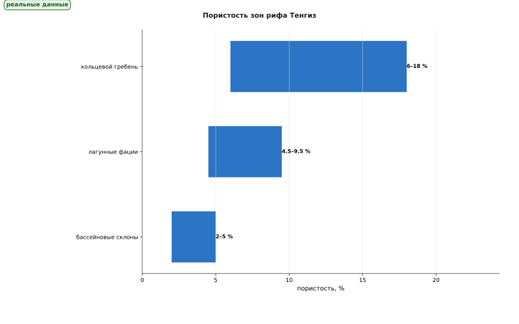

Путь › Когда лучшие коллекторы — на краю или вдоль рифа › Шаг 22 из 56
Пористость трёх зон рифа Тенгиз
В книге: «СТРОЕНИЕ РИФОВЫХ РЕЗЕРВУАРОВ» стр. 207, 209
Опирается на: шаг 20 «Почему лучшие коллекторы у края рифа» (предпосылка, пример), шаг 25 «Как читать карты фаций и пористости» (переход к данным)
Суть
Риф Тенгиз в Прикаспийской впадине показывает типичное для атолловидных рифов распределение коллекторов.
Пористость кольцевого гребня 6–18 %, бассейновых склонов 2–5 %, лагунных фаций — промежуточная, 4,5–9,5 %.
Диапазоны перекрываются, поэтому одно значение пористости не указывает зону однозначно.
Пороговая идея. Пористость рифа описывают диапазонами по зонам, а не одним средним для массива. модель
Как это работает
Пример Тенгиза
Типичное для атолловидных рифов распределение коллекторов установлено в нижнекаменноугольном рифе Тенгиз в Прикаспийской впадине. В нём выделены кольцевой гребень, бассейновые склоны и лагунные фации. стр. 207
«Типичное для атолловидных рифов распределение коллекторов установлено в пределах нижнекаменноугольного рифа Тенгиз»
Пористость по зонам
Пористость пород кольцевого рифового гребня составляет 6–18 %. На бассейновых склонах — внешних склонах, обращённых к бассейну, — она равна 2–5 %. стр. 209
«Пористость пород кольцевого рифового гребня составляет 6–18 %»
«в то время как на бассейновых склонах пористость равна 2–5 %»
Промежуточные значения установлены в лагунных фациях — 4,5–9,5 %. стр. 209
«промежуточные значения установлены в лагунных фациях – 4,5–9,5 %»
Нюанс
Диапазоны зон перекрываются. Например, лагунный интервал частично совпадает и с гребнем, и со склоном. Поэтому пористость описывают диапазонами по зонам, а не одним средним для всего массива. стр. 209

Разбор примеров из книги
Тенгиз: гребень, склоны и лагуна стр. 207
Условие. В нижнекаменноугольном рифе Тенгиз выделены зоны, типичные для атолловидных рифов.
- На кольцевом гребне отметить пористость 6–18 %.
- На бассейновых склонах отметить 2–5 %.
- В лагунных фациях отметить 4,5–9,5 %.
Итог. Пористость кольцевого гребня выше, чем склонов; лагунные фации имеют промежуточный диапазон.
Решение на данных
Какая это зона рифа Тенгиз?
- Пористость породы
- Положение в рифе
Сравнить пористость с диапазонами зон: гребень 6–18 %, склоны 2–5 %, лагуна 4,5–9,5 %; при перекрытии решает положение. стр. 209
Гребень, бассейновый склон, лагуна — или вывод невозможен по одной пористости.
Потренируйтесь
Дано: Пористость около 18 % (модель по числам автора)
18 % входит только в диапазон гребня 6–18 %.
Дано: Пористость около 2 % (модель по числам автора)
2 % входит только в диапазон склонов 2–5 %.
Дано: Пористость около 9 % (модель по числам автора)
Диапазоны гребня 6–18 % и лагуны 4,5–9,5 % перекрываются.
Цифры и условия
- Тенгиз, кольцевой гребень: пористость 6–18 %. стр. 209
- Тенгиз, бассейновые склоны: 2–5 %. стр. 209
- Тенгиз, лагунные фации: 4,5–9,5 %. стр. 209
Что это значит для данных модель
Для сравнения храните пористость и зональную принадлежность совместно.
- Вход
- Интервалы пористости с привязкой к гребню, склонам и лагунным фациям.
- Выход
- Сопоставление диапазонов по зонам.
- Где ломается
- Там, где диапазоны перекрываются, пористость не восстанавливает фацию однозначно.
- гипотеза Проверить, насколько привязка к позиции на рифе уточняет классификацию по пористости.
Где здесь ручной труд специалиста
- Входные данные
- Фациальная карта и интервалы пористости.
- Ручные шаги
- Сопоставить диапазон с зоной, сравнить границы и отметить перекрытия.
- Точки суждения
- Можно ли определить фацию по отдельной величине?
- Время
- Сравнение короткое при согласованной разбивке на зоны.
- Типичные ошибки
- Принимать границу диапазона за универсальный порог для других рифов.
Аналогия модель
Три зоны — как группы наблюдений с частично перекрывающимися распределениями.
Где аналогия перестаёт работать: Диапазоны не говорят, как часто внутри них встречается то или иное значение.
Глубже
Диапазон — не прогноз отдельной точки модель
Интервал характеризует наблюдавшийся разброс по зоне. Две зоны могут иметь общие значения, даже если их диапазоны в целом различаются.
Новые понятия
- риф (reef)
- Органогенное карбонатное тело, возвышавшееся над окружающим дном. модель
- атолловидный риф
- Риф, напоминающий по форме атолл. модель
- коллекторские свойства
- Свойства породы, определяющие её способность вмещать и пропускать жидкость или газ. модель
- нижний карбон
- Ранний интервал каменноугольного периода. модель
- пористость (porosity)
- Доля объёма породы, занятая пустотами. модель
- гребень (reef crest)
- Приподнятая часть рифа; биогермный гребень образован постройками рифостроящих организмов. модель
- бассейновый склон
- Внешняя наклонная часть рифа, обращённая к бассейну. модель
- лагуна (lagoon)
- Внутренняя часть рифового кольца, окружённая внешними зонами рифа. модель
- фация (facies)
- Горная порода или группа пород с характерными признаками обстановки их образования. модель
Проверь себя
%
Верный ответ: 18 %
Пористость гребня 6–18 % — выше, чем у склонов и лагуны. Где это в тексте (стр. 209) →
Расставьте зоны рифа Тенгиз по росту пористости.
Перетащите пункты (мышью или пальцем за ⠿) или двигайте кнопками ↑ ↓.
- Кольцевой гребень (6–18 %)
- Бассейновые склоны (2–5 %)
- Лагунные фации (4,5–9,5 %)
Верный ответ: Бассейновые склоны (2–5 %) → Лагунные фации (4,5–9,5 %) → Кольцевой гребень (6–18 %)
Склоны хуже всего, лагуна посередине, гребень лучше всего. Где это в тексте (стр. 209) →
Источник
Все утверждения шага с дословной цитатой автора и страницей книги (по PDF).
Нижнекаменноугольный риф Тенгиз в Прикаспийской впадине — пример распределения коллекторов, типичного для атолловидных рифов. наблюдение
«Типичное для атолловидных рифов распределение коллекторов установлено в пределах нижнекаменноугольного рифа Тенгиз»
Пористость пород кольцевого рифового гребня Тенгиза — 6–18 %. наблюдение
«Пористость пород кольцевого рифового гребня составляет 6–18 %»
Пористость на бассейновых склонах составляет 2–5 %. наблюдение
«в то время как на бассейновых склонах пористость равна 2–5 %»
В лагунных фациях пористость имеет промежуточные значения — 4,5–9,5 %. наблюдение
«промежуточные значения установлены в лагунных фациях – 4,5–9,5 %»
На этот шаг опираются: шаг 25 «Как читать карты фаций и пористости».